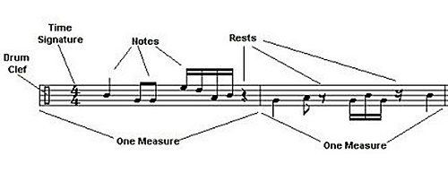

Components of a Staff
The music staff is the device that tells a musician what to play. It contains all the information as to what notes to play, when to play them, how loud or soft a passage should be, when to repeat a passage, timing and feel instructions as well as much, much more! A music staff can look like an unknown language to those unfamiliar with how it works, and in many ways, it is, but with a little time spent studying each part, a musician can use the music staff to paint a picture based on the composer's wishes. Let's look at a few components of the musical staff;
Clef
The job of the clef is to tell the musician what range of notes that will be used. The three most common clefs are the treble clef (G clef), bass clef (F clef), and the drum clef which is pictured above. The treble clef is typically used by melodic and harmonic instruments, though it's not uncommon to see a bass instrument using a treble clef instead of a bass clef and playing notes an octave lower than the actual pitch. Although most instruments primarily deal with one clef, it's not uncommon to see an instrument using more than one clef. For example, a trombonist might be expected to read from the bass clef or the tenor clef, sometimes even in the same piece of music.
Time Signature
A time signature consist of a fraction-like set of numbers (though it is certainly not a fraction). Its purpose is to tell the musician how many beats are in a measure (top number) as well as what length of note is equivalent to one beat (the bottom number, 4=quarter note, 8=eighth note, 2=half note). The most common time signature seen in modern music, often conviniently refered to as "common time" is 4/4 (pictured above). With the top number, we can see that there are four beats in a measure. With the bottom number, we can see that a quarter note gets one beat, so a measure in 4/4 consists of the equivalent of four quarter notes. Other common time signatures are 3/4, 6/8, 2/4, and 9/8.
Notes and Rests
Notes are the instructions that tell musicians what pitches to play, when to play them, and for how long. Rests are like notes, but show when a musician should not play a pitch rather than playing. You can learn more about both on the Rhythm and Notation page.
Measures
Measures (or bars) are equivalent to one group of beats on a staff. The number of beats in a measure ar dictated by the time signature and are seperated by a line spanning the staff. The lines, symbols, and ornaments typically surrounding the lines tell a musician if they should stop, repeat, go to another point in the song, or simply move on to the next measure.